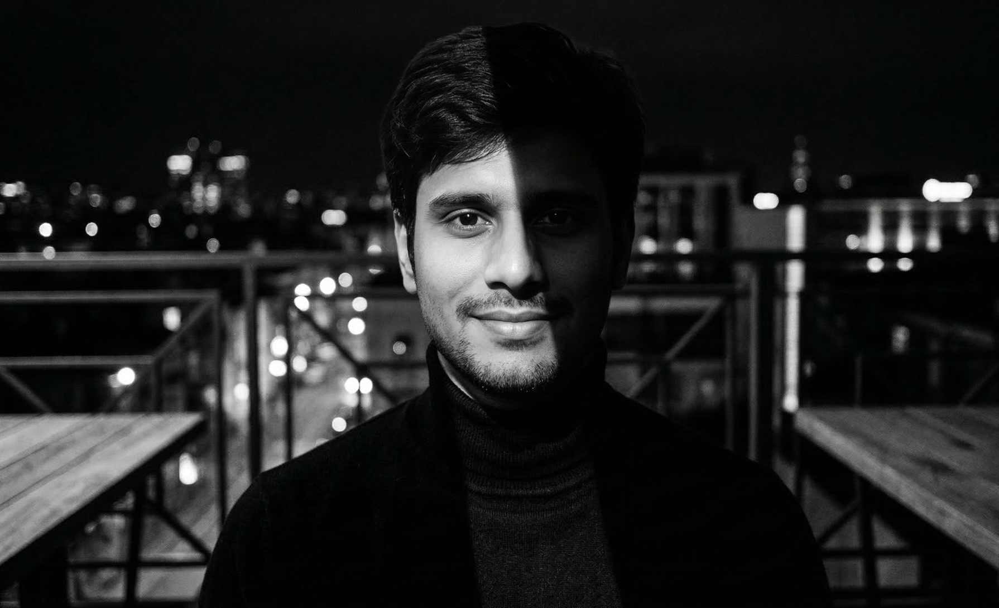

Integration is my craft.
Architecture is my canvas.
Five years building the connective tissue of enterprise digital transformation — across healthcare systems, financial platforms, and global SaaS ecosystems.


I'm Pallav Kumar Sharma — a MuleSoft Certified Architect and Integration Manager with over five years of experience designing and delivering enterprise-scale API and middleware solutions for global organisations.
My work sits at the intersection of technical depth and strategic vision. I specialise in the MuleSoft Anypoint Platform, API-led connectivity, and Salesforce ecosystem integrations — helping enterprises build the connective tissue that makes digital transformation real, not just aspirational.
I've had the privilege of leading integrations in some of the world's most demanding environments: HIPAA-compliant healthcare systems, UAE government tax platforms, global financial institutions, and SaaS-first enterprises. Each project has deepened my conviction that good integration architecture is ultimately about people — the engineers who maintain it, the users who depend on it, and the organisations whose operations run on it.
Beyond architecture, I care deeply about engineering culture. Mentoring teams, establishing governance standards, and building practices that outlast any single project — these are the things I'm most proud of.
What I bring to every engagement
A rare combination of hands-on technical delivery and architectural leadership. I can design the system, write the integration, review the pull request, and present the strategy to the C-suite — sometimes in the same week.